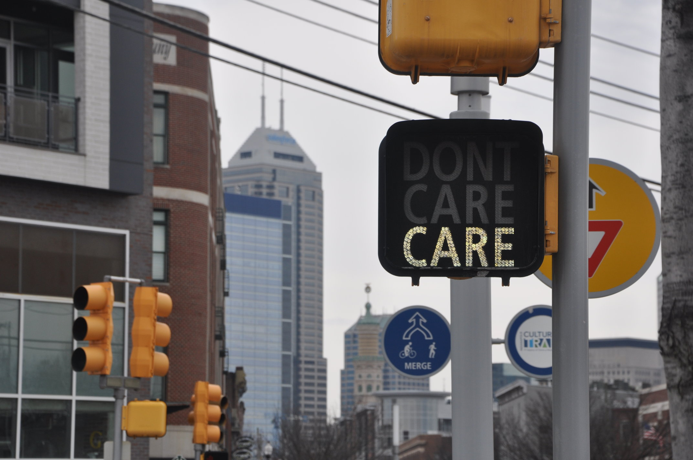
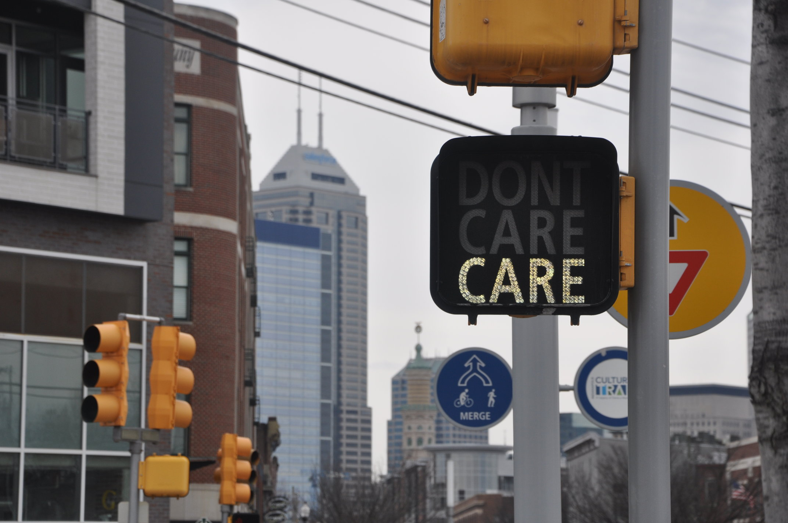
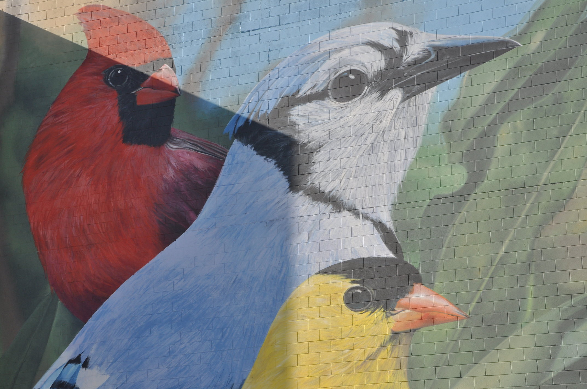
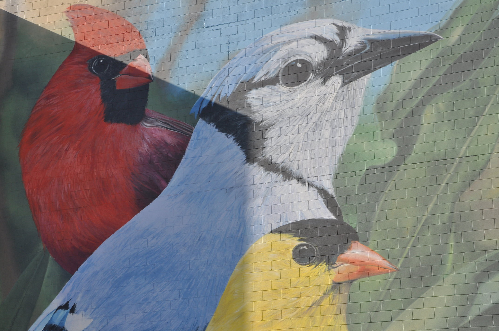

Indianapolis,often shortened to Indy, is the state capital and most-populous city of the U.S. state of Indiana and the seat of Marion County. According to 2019 estimates from the U.S. Census Bureau, the consolidated population of Indianapolis and Marion County was 886,220. The "balance" population, which excludes semi-autonomous municipalities in Marion County, was 876,384.
It is the 17th most populous city in the U.S., the third-most populous city in the Midwest, after Chicago, Illinois and Columbus, Ohio, and the fourth-most populous state capitol after Phoenix, Arizona, Austin, Texas, and Columbus. The Indianapolis metropolitan area is the 33rd most populous metropolitan statistical area in the U.S., with 2,048,703 residents. Its combined statistical area ranks 28th, with a population of 2,431,361. Indianapolis covers 368 square miles (950 km2), making it the 16th largest city by land area in the U.S.
Photo Gallery
 

 
